Studio · Flash de studio
Le flash de studio se règle à la main et se mesure au flashmètre. Voici les mises en place classiques, de la plus simple à la plus travaillée.
Rendus réalistes
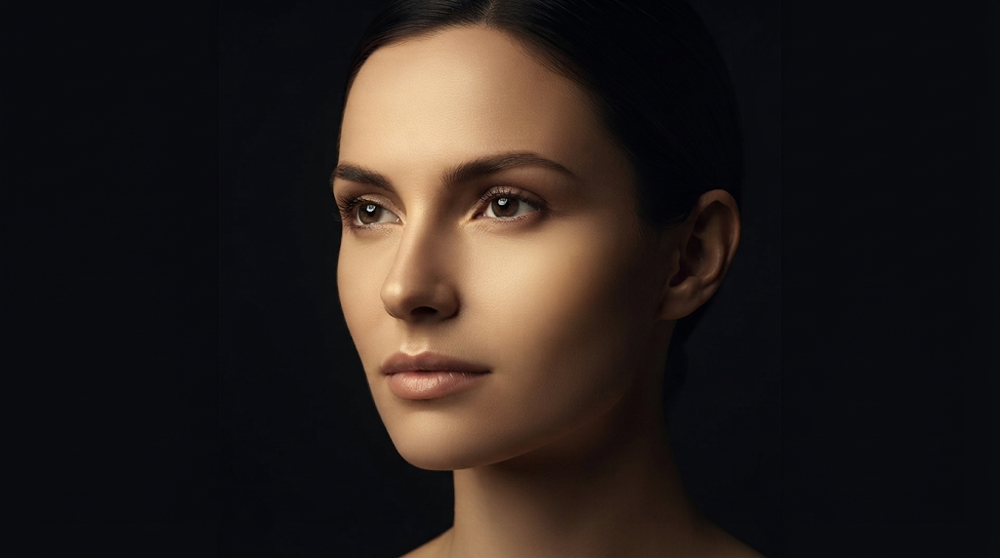
Rembrandt (triangle)
La lumière vient de haut et de côté : un petit triangle lumineux apparaît sur la joue ombrée, sous l'œil opposé. Rendu pictural et dramatique, très flatteur pour les portraits.
Softbox 60 cm · 45° haut et latéral · ratio 1:4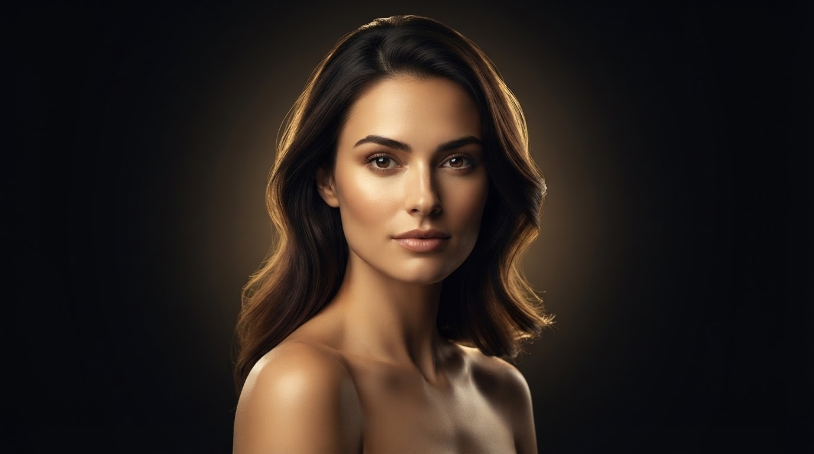
Éclairage trois points
Portrait studio classique de trois-quarts : trois lumières combinées. Key light (principale) chaude et dorée, venant de l'avant-gauche. Fill light (appoint) douce, qui atténue les ombres à droite. Rim light (contre-jour) : un filet brillant qui détache les cheveux et l'épaule du fond sombre. Rendu éditorial et propre.
3 sources · key chaude 45° · fill douce · rim 135°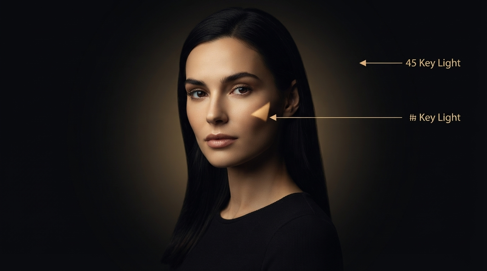
Key light 45° (lumière principale)
La source principale est placée à 45° sur le côté et au-dessus du regard. Elle modèle le volume du visage et crée l'ombre du côté opposé. Les flèches indiquent l'angle d'arrivée de la lumière.
Key à 45° · 30° au-dessus · source unique · ratio 1:2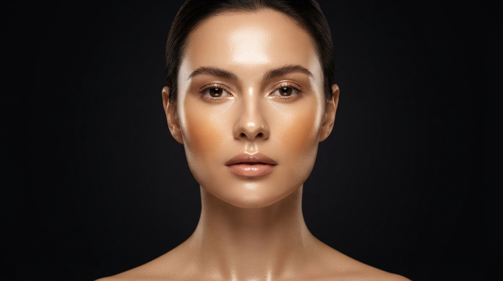
Key light 45° — rendu face
Variante sans annotations : même lumière principale à 45°, vue de face. On voit nettement le côté éclairé et le côté dans l'ombre, avec un modelé plus doux que la version dure.
Key à 45° · face au sujet · softbox · ratio 1:2Aide-mémoire : 9 schémas d'éclairage

Les 9 éclairages de portrait
Frontal, 45°, latéral, divisé, Rembrandt, boucle, papillon, large, court : neuf façons de placer une seule source pour transformer le même visage. Un guide à garder en tête au studio.
9 schémas · une source · studioGuide complet des schémas d'éclairage de portrait

Douze mises en place, une même modèle
Boucle avec éclairage d'arrière-plan, éclairage plat, papillon, split, split large, gels colorés, split avec remplissage, boucle avec contour, Rembrandt large, boucle, source proche et douce, Rembrandt avec parapluie argenté, source éloignée et douce, Rembrandt à travers un parapluie. Chaque vignette montre le placement de la source à gauche et le rendu obtenu à droite : le même visage, transformé par la lumière.
12 setups · schéma + rendu · studioStudio · Flash cobra
Le flash cobra (speedlight) se déclenche à distance avec un transmetteur. Léger et mobile, il change tout en extérieur comme en petit studio.
En images et en vidéo
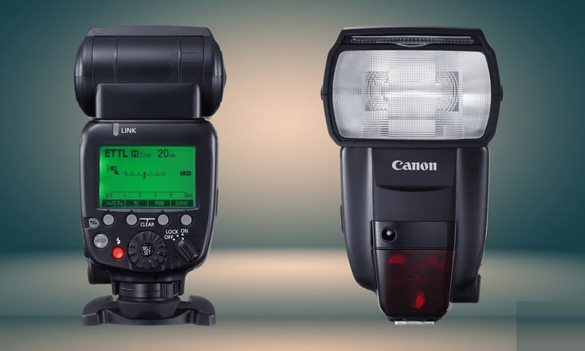
Anatomie d'un flash cobra
À gauche, le dos du flash avec son écran : on y règle le mode TTL ou manuel, la puissance et le zoom. À droite, la tête orientable et sa lentille de Fresnel : en la pivotant, on rebondit la lumière sur un mur ou un plafond pour l'adoucir.
Cobra · TTL/manuel · tête orientableLe cobra en key light
Un seul flash cobra à 45° suffit à sculpter le visage. Léger, rapide à positionner, il remplace une softbox en studio comme en déplacement.
Cobra + transmetteur · 45° · 1/125
Cobra + diffuseur
Un petit diffuseur devant le cobra adoucit la lumière : le rendu se rapproche du studio, avec un matériel qui tient dans une sacoche.
Cobra + diffuseur · proche du sujetLumière continue
La lumière continue (LED, halogène) permet de voir le rendu en direct — idéale pour la vidéo et les débutants. Elle demande plus de puissance qu'un flash.
En images et en vidéo
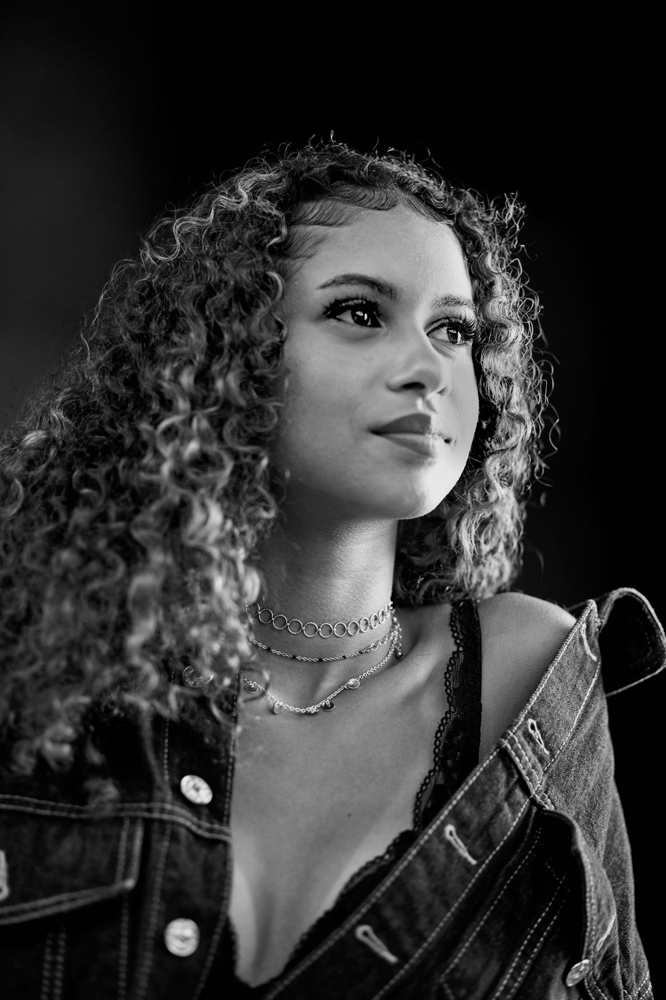
Source large · 45° Lumière douce · peau lisseLED en lumière douce
Une grande source LED proche enveloppe le visage : ce que tu vois est ce que tu obtiens. Parfait pour la vidéo et pour apprendre à lire la lumière.
LED + softbox 90 cm · 45° · 1/200
Softbox 90 cm · 45°
5600 K · lumière continue
Ombres visibles en direct
Le setup continu
Panneau LED ou softbox : on règle la température de couleur et on visualise les ombres en direct, sans attendre le flash. Ce que tu vois dans le viseur est ce que tu obtiens sur la photo.
Panneau LED · 5600 K · grande surfaceÀ voir en vidéo
Portrait noir & blanc
Éclairage studio en lumière continue : voir le rendu en direct et construire un portrait noir & blanc.
Vidéo · françaisPortrait créatif
Une autre façon d'utiliser la lumière continue, avec le Tech' de la photo : mise en place et rendu.
Vidéo · françaisExtérieur
Dehors, on travaille avec le soleil — ou contre lui. La lumière dorée, le fill flash et le contre-jour changent complètement l'image.
En images et en vidéo
Lumière naturelle
En extérieur, le soleil fait tout le travail. On choisit l'heure, l'angle et le sens du regard pour façonner le visage.
Lumière naturelle · heure doréeContre-jour doré
Soleil derrière le sujet : un liseré chaud détache les cheveux. On sous-expose le fond et on laisse parler le contour.
Soleil arrière · expo -1 IL · f/2.8Strobisme · Flash déporté
Le flash déporté sort du axe de l'objectif : on façonne la lumière comme au studio, en plein air ou dans une pièce sans fenêtres.
En images et en vidéo
Le déporté en clé
Le flash quitte l'appareil et se place à 45° : l'ombre se déplace, le volume apparaît. Le geste qui change tout.
Flash déporté · 45° · transmetteur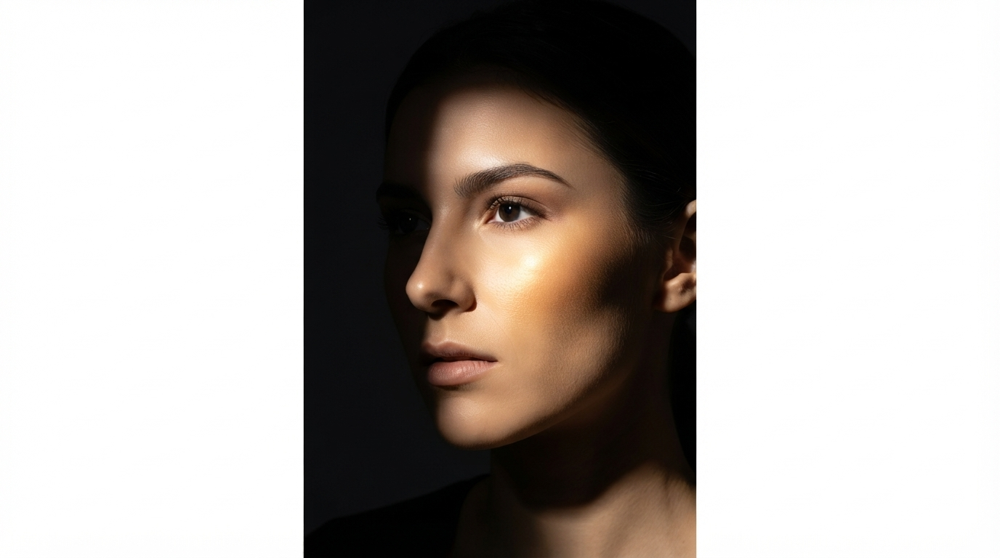
Flash nu et ombre nette
Un déporté sans diffuseur dessine une ombre à bord franc : idéal pour le caractère et les rendus cinématographiques.
Flash nu · 90° · ratio 1:8Comprendre le strobisme
1. Sortir le flash de l'appareil
Tout commence par un flash qui n'est plus sur la griffe : on le pose sur un pied ou on le tient à bout de bras. Le déclencheur radio (ou infrarouge) synchronise le flash avec l'appareil photo.
Flash + déclencheur + pied2. Régler en manuel
En strobisme, on passe en manuel : on choisit la puissance du flash (1/1 à 1/128) et on mesure le résultat. C'est ce qui donne une lumière prévisible et répétable.
Mode manuel · 1/16 à 1/4 en général3. Modeler avec les accessoires
Nu, le flash donne une ombre dure. Une softbox, un parapluie ou un diffuseur élargissent la source et adoucissent les transitions. Un snoot, lui, resserre le faisceau en spot.
Softbox · parapluie · snoot · grille4. Dos lumière /ombre
La clé sculpte le visage, le fill (souvent un réflecteur) réveille les ombres, le rim détache le sujet du fond. On ajuste l'écart entre eux avec le ratio lumière.
Key · fill · rim · ratio 1:2 à 1:85. Equilibrer avec l'ambiant
En extérieur ou dans une pièce éclairée, on sous-expose le fond d'environ 1 IL pour que le flash devienne la lumière principale. Vitesse 1/200, f/4, ISO 100 sont un bon point de départ.
1/200 · f/4 · ISO 100 · -1 IL6. Le matériel minimal
Un cobra, un transmetteur, un pied et un diffuseur suffisent pour commencer. Le strobisme est nomade : on fait du studio partout, sans secteur ni grande valise.
Cobra + transmetteur + pied + diffuseurVidéos : les bases avec Benjamin Tantot
À découvrir aussi : le Studio de rue de Blaise (Fotoloco)
C'est au Salon de la photo, en découvrant ses vidéos, que je me suis intéressé au studio de rue. Blaise est l'auteur de la série Studio de rue / Strobist, une référence pour créer de la lumière de studio en extérieur avec de petits flashes déportés. Ses vidéos sont protégées par le droit d'auteur : je ne les intègre pas ici, mais tu peux les regarder directement chez lui.
→ 7 schémas d'éclairage pour débuter (YouTube · Fotoloco)
→ Chaîne YouTube de Blaise · Fotoloco
Le triangle d'exposition
Une photo, c'est trois curseurs qui travaillent ensemble : l'ouverture, la vitesse et l'ISO. Baisser l'un oblige à compenser par un autre — c'est la base de tout réglage manuel.
Ouverture (diaphragme)
Le trou de l'objectif, noté f/. Un petit chiffre (f/1.8) = grande ouverture = beaucoup de lumière et fond flou. Un grand chiffre (f/11) = peu de lumière et tout net.
f/1.8 · portrait flou · f/11 · paysage netVitesse d'obturation
Le temps pendant lequel le capteur voit la lumière. Rapide (1/1000s) = action figée. Lent (1/30s) = mouvement flou et plus de lumière. En portrait, on reste au-dessus de 1/125s.
1/1000s · sport · 1/125s · portrait · 4s · feuxSensibilité ISO
L'amplification du signal. ISO 100 = image la plus propre, mais il faut beaucoup de lumière. ISO 3200 = on peut photographier dans le noir, au prix d'un grain plus visible.
ISO 100 · jour · ISO 800+ · intérieur/nuitCompenser : la règle d'or
Si tu fermes d'un cran (f/2.8 → f/4), tu perds de la lumière : compense en allongeant la vitesse ou en montant l'ISO. L'œil finale reste la même, seul le rendu change.
1 cran = 2× moins de lumièreEn portrait
On ouvre grand (f/1.8 à f/2.8) pour flouter le fond, vitesse rapide (1/200s) pour la netteté, et ISO 100 tant que la lumière le permet. La lumière sculptée fait le reste.
f/1.8 · 1/200s · ISO 100Au flash déporté
Autre règle : l'ouverture et l'ISO règlent le flash sur le sujet, la vitesse règle la lumière ambiante du fond. Voilà pourquoi on sous-expose le fond avant d'ajouter le flash.
1/200s · f/4 · ISO 100 · fond -1 ILComprendre la vignette : le triangle en un coup d'œil
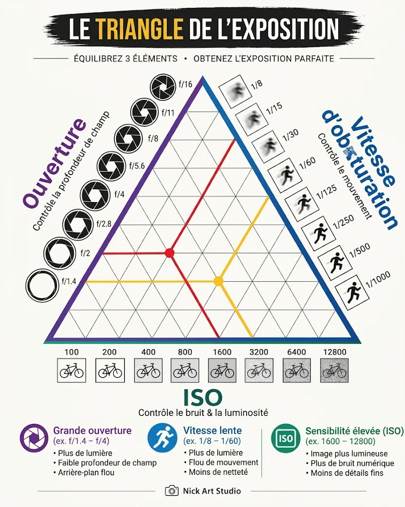
Lire la vignette
Chaque sommet du triangle correspond à un réglage : l'ouverture (profondeur de champ), la vitesse d'obturation (mouvement) et l'ISO (bruit et luminosité). Les petites icônes montrent l'effet de chaque valeur : à f/1.4 le fond est flou, à 1/1000s le mouvement est figé, à 12800 ISO le grain apparaît. Les lignes rouge et jaune sont des expositions équivalentes : on peut changer les trois réglages tout en gardant la même luminosité.
Ouverture · Vitesse · ISO · expositions équivalentes1. L'ouverture contrôle la profondeur de champ
Notée f/, c'est l'ouverture du diaphragme. Un petit chiffre (f/1.4 à f/4) laisse entrer beaucoup de lumière et donne un arrière-plan flou — idéal en portrait. Un grand chiffre (f/8 à f/16) garde tout net, du premier plan à l'horizon — idéal en paysage. Sur la vignette, l'échelle violette va de f/1.4 en bas à f/16 au sommet.
f/1.4 · flou · f/16 · tout net2. La vitesse contrôle le mouvement
La durée pendant laquelle l'obturateur laisse passer la lumière. Lente (1/8 à 1/60s), elle enregistre le filé et le flou de bougé — utile pour une cascade ou un feu d'artifice. Rapide (1/250 à 1/1000s), elle fige l'action en sport ou en portrait. Sur la vignette, l'échelle bleue monte du bas vers le sommet.
1/8s · filé · 1/1000s · figé3. L'ISO contrôle le bruit
La sensibilité du capteur. À 100-200 ISO, l'image est propre et douce : c'est le réglage de jour. À 1600 ISO et plus, on gagne en luminosité mais le grain numérique apparaît et les détails fins disparaissent. Sur la vignette, l'échelle verte va de 100 (à gauche) à 12800 (à droite), avec des vélos de plus en plus bruités.
ISO 100 · propre · ISO 12800 · granuleux4. La compensation : garder la même exposition
Le triangle entier tient sur une règle simple : si tu donnes moins de lumière d'un côté, tu la reprends d'un autre. Fermer d'un cran (f/2.8 → f/4) divise la lumière par deux ; compense en doublant le temps de pose (1/250 → 1/125) ou en doublant l'ISO (100 → 200). C'est exactement ce que montrent les deux lignes colorées de la vignette : deux réglages très différents, une même image.
1 cran = ×2 ou ÷2 de lumière5. Choisir sa priorité créative
On ne règle pas « au hasard » : on choisit d'abord l'effet voulu. Portrait ? On ouvre à f/1.8 et on laisse l'appareil calculer vitesse et ISO. Sport ? On impose 1/1000s et on ajuste l'ouverture. Paysage ? On ferme à f/11 sur trépied. Les modes A, S et M ne sont que des façons de donner la priorité à un sommet du triangle.
Priorité ouverture · vitesse · manuel6. Le piège de l'ISO auto
En laissant l'appareil gérer l'ISO, on obtient une image correctement exposée mais souvent trop bruitée en fin de journée. Gardez un œil sur la vignette : dès que l'ISO dépasse 1600, préférez ouvrir un peu plus ou ralentir légèrement la vitesse, quitte à poser l'appareil sur un support. La lumière sculptée n'en sera que plus propre.
Surveiller l'ISO · privilégier le trépiedEn vidéo
Lumière dure et douce
Ce qui rend une ombre dure ou douce, ce n'est pas la puissance du flash — c'est la taille apparente de la source par rapport au sujet, et sa distance. Une petite source loin = ombres dures. Une grande source proche = ombres fondantes.
Lumière dure
Une petite source donne une ombre à bord net, fort contraste : la moitié du visage est dans l'ombre, la peau et les textures sont marquées. Parfait pour le caractère et le dramatique.
Flash nu ou snoot · petite source · ratio 1:8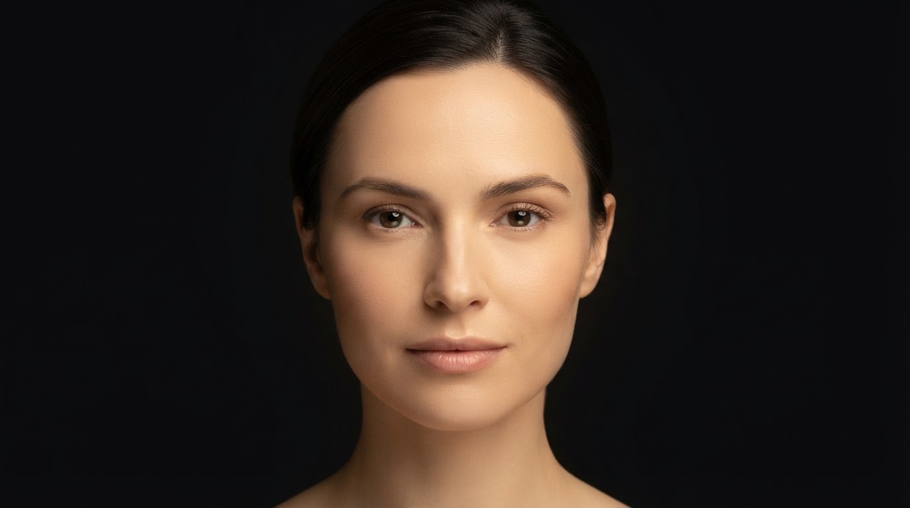
Lumière douce
Une grande source proche enveloppe le visage : les ombres sont fondues, la peau est lisse et les transitions progressives. Idéal pour les portraits naturels et flatteurs.
Grande softbox 90 cm ou lumière continue · proche du sujet · ratio 1:1Poses · Le corps parle
La lumière sublime, la pose raconte. Comme dans la vidéo studio de Benoit Lombard ci-dessus — quelques attitudes qui fonctionnent toujours, et comment les guider.
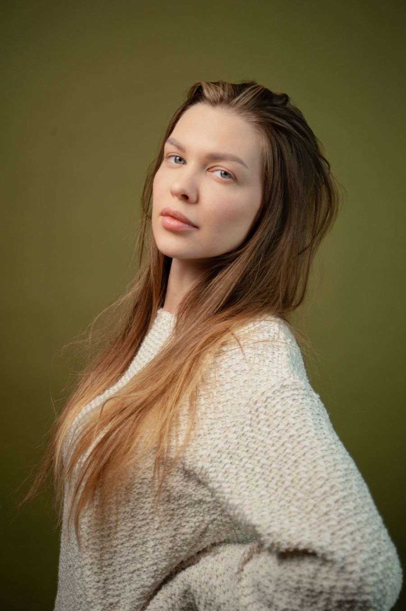
Le 3/4 debout
Épaules légèrement tournées, visage vers l'objectif. La pose la plus naturelle : elle allonge le cou et sculpte les joues.
À proposer en premier — 80 % des portraits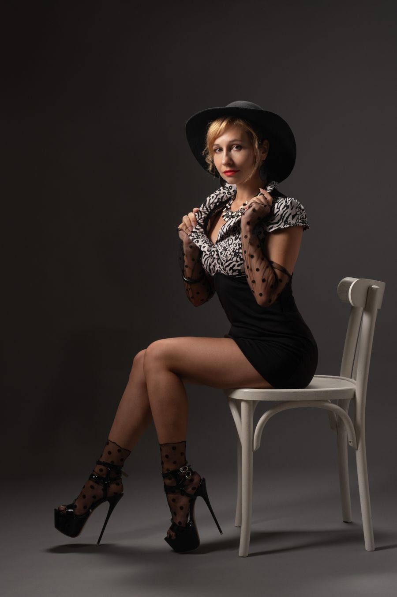
Assise, dos rond
Assise sur le bord, dos légèrement arrondi vers l'avant : le regard monte vers l'objectif. Détendue et graphique.
Fauteuil, banc, rebord — tout marche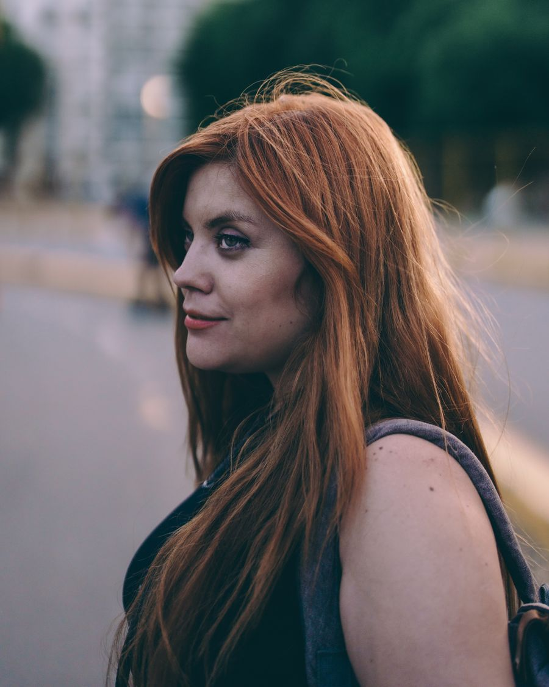
Regard de côté
Le visage tourne à 45–90°, le regard reste vers l'objectif ou part au loin. La lumière key fait alors tout le travail de relief.
Idéal avec une lumière sculptée
Tête penchée
Une inclinaison de 10–15° casse la raideur. Demande « penche la tête un peu » — jamais plus, sinon le regard se perd.
Détail qui change tout en plan serré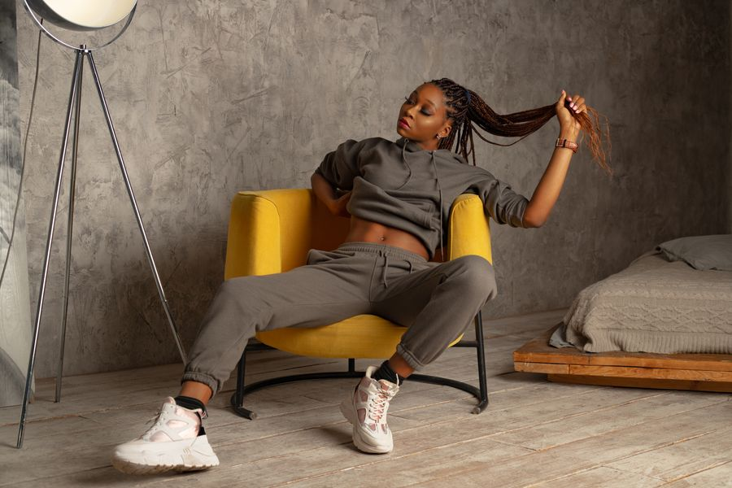
La main en geste
La main dans les cheveux, le bras levé : le geste detend le haut du corps et donne du mouvement a la pose. A demander au modele sans trop de tension.
Main dans les cheveux · bras leve
En mouvement
Marche, demi-tour, retour de regard : le mouvement tue la pose figée. Déclencher en rafale et choisir l'instant.
Rafale + synchro flash si besoinDiriger un modèle : la méthode
1. Commencer par le regard
Avant la pose, dites au modèle où regarder : « regarde vers la lumière », « regarde un point au-dessus de mon épaule ». Un regard précis donne vie au portrait — un regard flou le rend absent.
Donner un point précis2. Verbaliser par image
« Penche la tête », « avance le menton », « détends les épaules » : des phrases courtes et concrètes. Évitez « sois naturel » — le modèle ne sait pas ce que ça veut dire. Donnez une image : « imagine que tu viens d'entendre une blague ».
Phrases courtes · images mentales3. Ajuster le corps
Épaules tournées de trois-quarts, poids sur une jambe, mains occupées (cheveux, vêtement, menton). Corrigez une articulation à la fois : trop de consignes d'un coup et le modèle se fige.
3/4 · poids décalé · mains actives4. Gagner la confiance
Parlez pendant la séance, regardez les images sur l'écran et dites ce qui marche. Un modèle qui se sent beau se détend — et c'est cette détente, plus que la pose parfaite, qui fait la bonne photo.
Encourager · montrer · détendreAide-mémoire : 30 poses pour homme
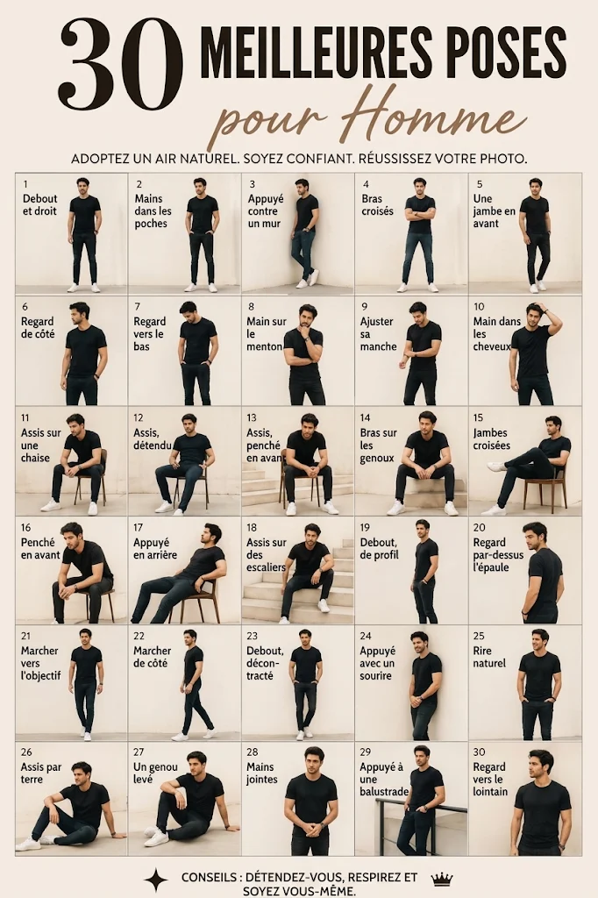
Le guide des poses masculine
Debout, assis, appuyé contre un mur, mains dans les poches : 30 idées pour un rendu naturel et assuré. À garder sous la main pendant le shooting.
30 poses · naturel et confiance